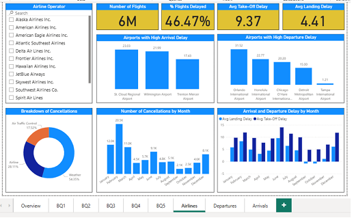
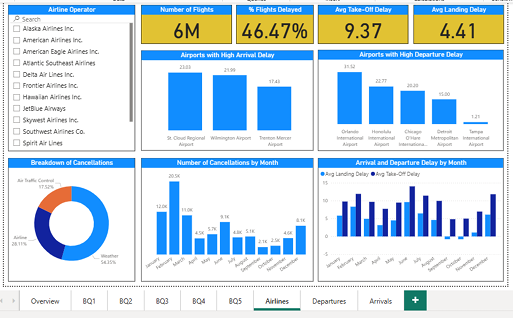

I am a Data Science undergraduate with a strong foundation in machine learning, data systems, and software development. My academic and project work focuses on applying ML techniques to real-world problems, particularly in natural language processing, document understanding, and data-driven applications.
I am preparing to pursue a Master’s degree in Computer Science in the US, with interests in applied machine learning, scalable data systems, and intelligent software solutions.
NLP, CNNs, TF-IDF, OCR, OpenCV, TensorFlow
Applied in sentiment analysis and document understanding systems
Flask, MongoDB, SQL, Spark, Hive
Used in full-stack ML applications and analytics pipelines
Jan 2018 – May 2018
My academic interests lie at the intersection of machine learning, computer vision, and large-scale data systems. I am particularly interested in:
I aim to pursue coursework- and project-intensive graduate programs that emphasize applied research, system design, and real-world problem solving.
End-to-end document understanding system for extracting structured voter information from scanned electoral roll PDFs using OCR and multimodal LLMs.
NLP-based sentiment analysis system classifying Steam reviews as positive or negative using TF-IDF features and an MLP classifier.
CNN-based image classification system for detecting fire vs no-fire scenarios using real-world forest imagery.
Full-stack web application for tracking fitness metrics and providing AI-assisted health guidance through an integrated chatbot.

Interactive Power BI dashboard analyzing airline delays, cancellations, and on-time performance across airports and seasons.
 

Large-scale data analysis project using Apache Spark and Hive to evaluate distributed processing performance on multi-million record datasets.
Community-driven environmental and public space revitalization initiatives, including government school and college beautification.
Volunteered in child education and community food distribution programs.

Assisted elderly residents through social engagement and support activities.
📧 Email: prabhasbhat2@gmail.com
💼 Open to internships, research roles, and MS opportunities